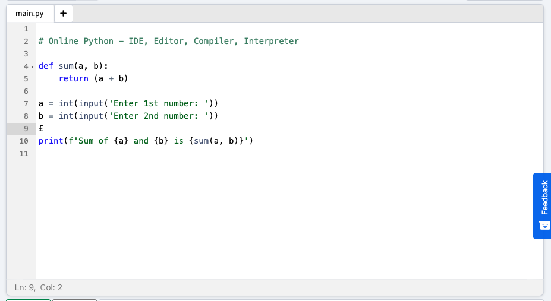
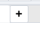
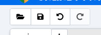
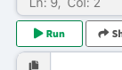
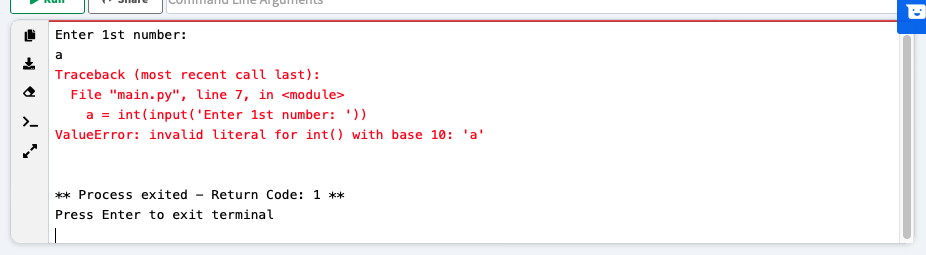
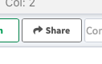

Sections in this course will be divided in three parts. Documentation, practice and homework. You have to read the documentation first to learn about the topics of this section, then practice using a Python interpreter and then solve the homework and send it to me for grading and corrections.
An IDE is an Integrated Development Environment. It is software for building applications that combines common developer tools into a single user interface. The IDE you are going to use will provide you with a text editor and a way to run your code online without installing anything.
The IDE you are going to used is called Online Python. It can be found in www.online-python.com.
The IDE has the following sections:
In this area you write your code. It provides Syntax Highlighting (Syntax highlighting is a feature of text editors that are used for programming, that displays text, especially source code, in different colours and fonts according to the category of the commands written).

Click this button to start editing a new Python script.

Click these buttons to load a saved script, to save a script, to undo something you've done or to redo something you've undone.

Click this button to run your script.

When you run your script, its output will be displayed to the output console.

Finally, when you've written a script that you want to share with me, you can use the share button.

Read this before proceeding to the rest of the section! Read every article with care and try the examples it provides. If you see code, test it in the online IDE to see what it does!
Complete these excercises to test what you've learned! You can click the Show Answer button to get the correct answer. Try not to press it too much! Use the Submit Answer button to submit your answer and check if it was correct or not. Don't worry, you can try all the times you want! Try not to press the Show Answer button until you've tried a few times!
Complete the following excercises. When you are done, share the script with me! You have until February 10 (Thursday) to hand me this assignment.
result that stores the sum of all the other variables. Then, print the value of
this variable.result variable if you change the value of any of the other variables? Write a comment below your code answering this question.